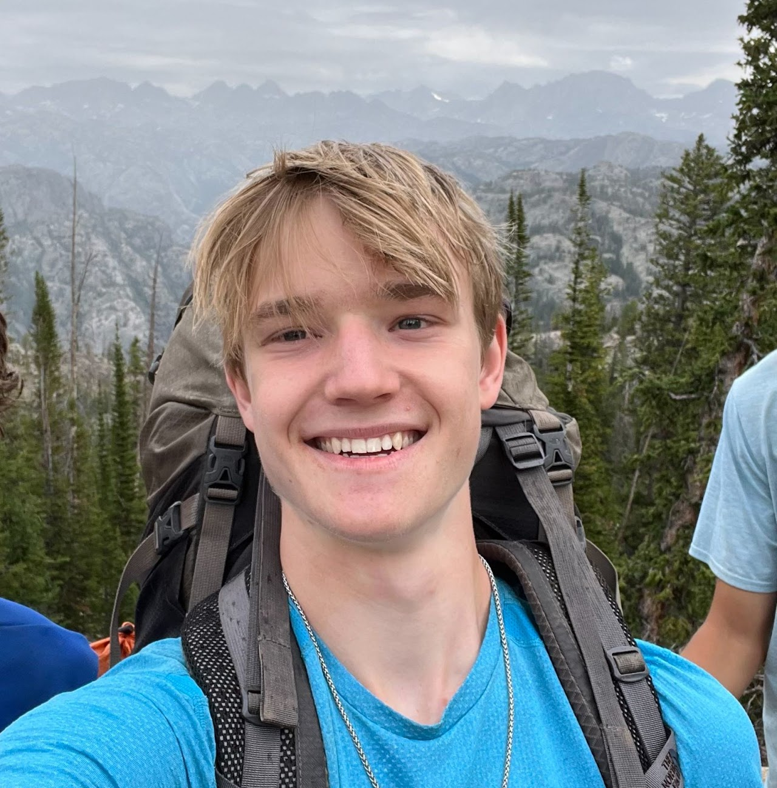

William HueyHi, I'm Will. I'm a Senior at Cornell University studying Computer Science, and I'm currently working with Prof. Sanjiban Choudhury and the PoRTAL Lab on learning robotic control from video demonstrations. In the past, I worked under Prof. Marco Hutter at the ETH Zurich Robotic Systems Lab and Prof. Don Greenberg at the Cornell Program of Computer Graphics. I spent a summer as an intern at NASA and another at Amazon Web Services. At Cornell, I've maintained a 4.1 GPA, I was a teaching assistant for CS 1620: Visual Imaging in the Electronic Age, and I'm a Rawlings Presidential Research Scholar. I am applying to PhD programs for the fall 2025 admissions cycle. Outside of school, I enjoy running marathons, climbing walls, and playing foot volley. Here are a few of my recent projects :) |
 |
ResearchI'm interested in representation learning, reinforcement learning, and agentic decision making. |

|
Time Your Rewards: Learning Temporally Consistent Rewards from a Single Video DemonstrationHuaxiaoyue Wang*, William Huey*, Anne Wu, Yoav Artzi, Sanjiban Choudhury CoRL 2024 Workshop on Whole-body Control and Bimanual Manipulation, 2024 paper / code / We show that existing approaches for inferring reward functions from video demonstrations result in temporal inconsistencies: agents complete subtasks in the wrong order, get stuck along the expert trajectory, or fail to stay in the final state. Our approach mitigates this problem, solving humanoid control tasks quickly and efficiently. |
Other ProjectsThese include coursework, side projects and unpublished research work. |

|
Distilling Vision-Language Models for Real-Time Traversability PredictionWilliam Huey*, Sean Brynjolfsson*, Donald Greenberg Cornell Discover Undergraduate Research in Engineering Showcase, 2024 paper / poster / code / Currently, most traversability prediction methods rely on heuristics, human demonstration, or pretraining on a specific set of object classes. We show that large pretrained vision language models can accurately predict traversability. Applying this insight, we distill fast traversability prediction models that run in real time on robot hardware, allowing for long horizon unguided exploration. |

|
SuperEdge: A CNN-Based Approach for Quadruped Traversability Analysis from Incomplete ObservationsWilliam Huey* CS 4756: Robot Learning Final Project, 2023 paper / video / code / I demonstrate self-supervised traversability learning in simulation given sparse point cloud observations. To support this project, I developed a navigation stack for legged robots in Nvidia Isaac Sim, which includes traversability estimation, environment graph generation, graph search, and path tracking. |

|
Practices in Combinatorial Testing Relevant to Spacecraft Software VerificationWilliam Huey*, D. Richard Kuhn, William Stanton NASA Summer Intern Symposium, 2022 Traditional code coverage metrics, like branch and line coverage, can miss dangerous combinations of inputs to a program. Combinatorial testing is a method for covering the input space of a program, but it had not previously been investigated in the context of state-machine based systems, such as those used for flight control software. I developed a tool that automatically generates tests for these systems with a specified degree of combinatorial coverage. |
|
Design and source code from Leonid Keselman's Jekyll fork of Jon Barron's website |